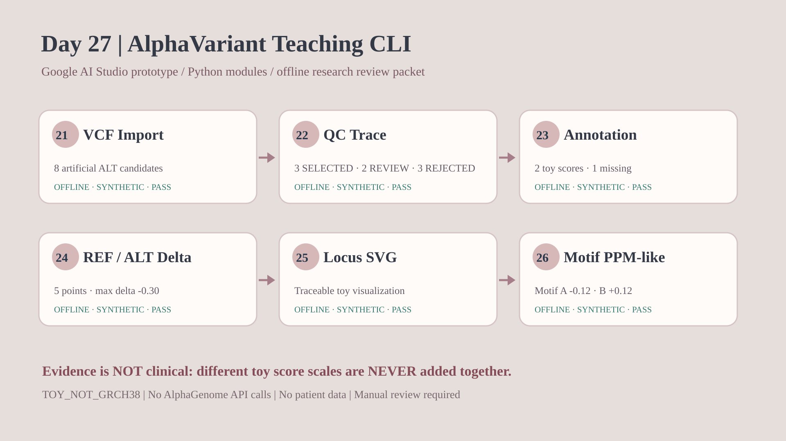

Day 27｜封裝分析流程 — 打造自己的 AlphaVariant CLI
一條指令串起 Day 21–26 的六個獨立、合成的分析模組。
OFFLINE ONLY · SYNTHETIC · TOY_NOT_GRCH38
沒有 AlphaGenome Atlas／Model LIVE API、沒有病人資料、沒有醫療判斷。 這是教學 CLI，不是私人 GitHub v0.1.0 的 alpha-variant 正式程式。
沒有 AlphaGenome Atlas／Model LIVE API、沒有病人資料、沒有醫療判斷。 這是教學 CLI，不是私人 GitHub v0.1.0 的 alpha-variant 正式程式。
8
ALT 候選
3
通過教學 QC
1
缺人工分數
6
獨立模組
依序執行的六個階段
| 階段 | 重用模組 | 證據 | 結果 |
|---|---|---|---|
| Day 21 | day21_offline_vcf_review_lab | JSON | PASS |
| Day 22 | day22_offline_qc_explorer_lab | JSON | PASS |
| Day 23 | day23_offline_annotation_lab | JSON | PASS |
| Day 24 | day24_offline_refalt_track_lab | JSON | PASS |
| Day 25 | day25_offline_locus_plot_lab | JSON | PASS |
| Day 26 | day26_offline_ppm_motif_lab | JSON | PASS |
CLI Pipeline Overview

Day 25 曲線與 Day 26 序列偏好
兩份不同的合成資料，只以人工變異識別碼串聯，不合併分數，也不推論真實生物機制。